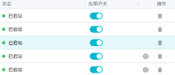
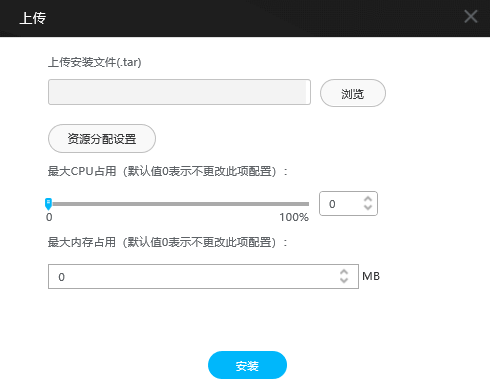

应用安装或升级
应用安装
在使用智能交通摄像机时，请先安装应用“its_app”。应用文件可随摄像机配套的软件版本获取。

“its_app”应用仅适用于中国大陆、澳门和台湾地区的车牌识别，如需识别中国香港、非中国地区的车牌，请安装对应地区的应用。更多应用信息（包括车牌识别地区），请参见摄像机配套的产品文档中“安装应用”。
登录摄像机后进入预览界面，选择维护进入摄像机App管理界面。如图1所示，不同款型展示界面不同，请以实际界面为准。
|
显示当前摄像机设备型号、CPU使用率、总共内存、空闲内存、Cache、物理地址、网络接收速率和网络发送速率等信息。 |
|
添加安装新应用，详见安装或升级应用。 说明：
安装应用前，建议先安装SD卡。 |
|
删除APP分区中除APP以外的文件 说明：
|
 |
单击，可以启用或关闭应用。 单击，弹出提示框，单击“确定”即可删除应用。 单击，可以进入第三方应用配置界面。 |

安装或升级应用
- 单击“”，弹出“新增应用”对话框。

- 可通过“新增应用”上传相同名称不同版本的应用来实现应用升级。安装后，界面“版本号”列显示APP最新版本。
- 可通过“新增应用”上传相同名称相同版本的应用补丁来实现应用补丁的安装。安装后，界面“补丁列表”列显示补丁信息。
- 安装应用。
- 上传本地安装文件。
- 可选：设置安装时占用的摄像机最大CPU和内存资源。
- 单击“安装”。
- 安装完成后单击“确定”。
- .rpm文件首次安装时，“最大CPU占用”/“最大内存占用”设置为“0”，表示使用该文件自身配置文件中的占比配置（.rpm文件未配置时，此处设置为“0”表示不限制该文件占用比例）。“最大CPU占用”/“最大内存占用”需谨慎配置，以免影响应用运行。
- 相同名称不同版本.rpm文件覆盖原文件安装时，“最大CPU占用”/“最大内存占用”设置为“0”，表示沿用原版本.rpm文件的占比设置。
- 相同名称不同版本.rpm文件覆盖原文件安装后，APP已刷新，界面呈现无变化，不显示版本号或补丁信息。
- 除图示应用外，您也可以根据需要安装其他应用，登录华为技术支持官网，搜索对应的设备型号，选择“软件”，获取对应型号的产品软件包。
- 安装第三方应用需先到HoloSens算法商城做签名认证，认证后将xxx.tar.gz解压缩，包含：xxx.tar和abc.txt两个文件，安装应用时只需要上传xxx.tar文件。
- 当设备升级its_app过程中，出现重启、断电等异常情况导致its_app未能完整安装，重新安装its_app时提示“不支持安装同款App”或“空间不足”，需要登录ssh删除/usr/alg_model/目录下的hw_its文件夹，再重新升级its_app，就可以升级成功。
图2 安装第三方应用
 最大CPU占用和最大内存占用需单击资源分配设置后展示出来。